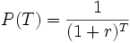

| Concept: Discount Factor |
 |
|
| Related Elements |
|---|
The Discount Factor P(T) is the number that a future cash flow, to be received at time T, must be multiplied by to get the current value. Thus, a fixed annually compounded discount rate is:  The critical component in the discount factor is the discount rate r in this equation. The discount rate used in financial calculations is usually chosen to be equal to the Cost of Capital for the firm for which the calculation is being performed. The Cost of Capital, in financial market equilibrium, will be the same as the Market Rate of Return on the financial asset mixture that the firm uses to finance capital investment. The Cost of Capital typically reflects the risk-free rate of return (for example, risk-free securities such as U.S. Treasury notes) plus an adjustment that is appropriate for the type of firm involved. The discount rates (including both the risk-free rate and the adjustment) typically applied to various types of companies are significantly different, for example:
|
Licensed Materials - Property of IBM |